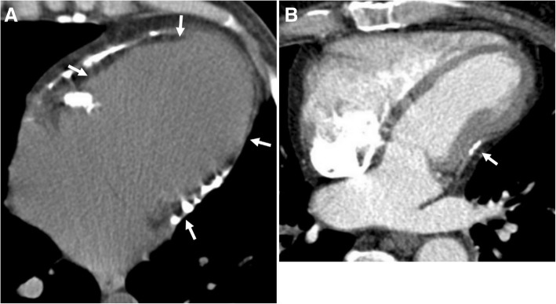
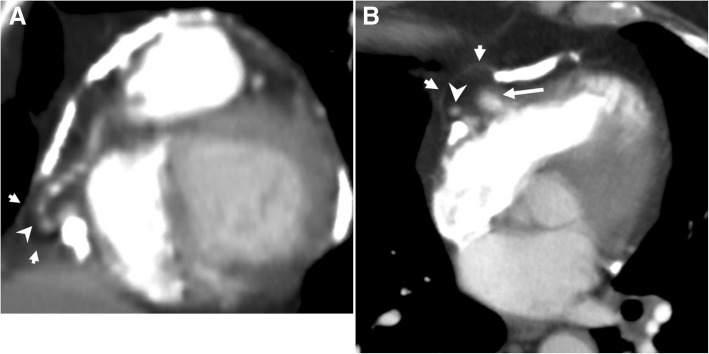
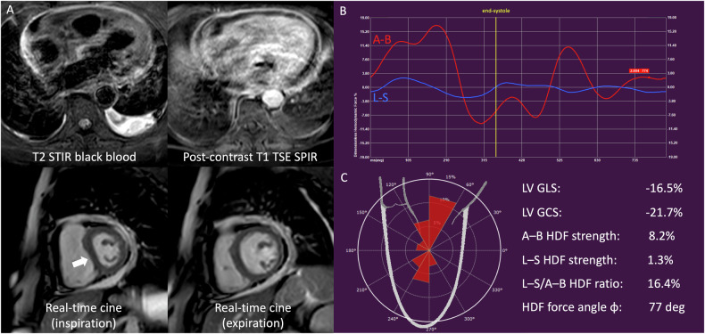

1885 — Viêm màng ngoài tim co thắt: vôi hóa "áo giáp", septal bounce và ngưỡng cắt màng ngoài tim / Constrictive pericarditis
Tags: pattern:vien-mang-ngoai-tim pattern:voi-hoa-mang-tim pattern:day-mang-ngoai-tim pattern:hao-hut-tam-truong vung:mang-tim vung:tim protocol:MRI-tim protocol:CT-tim protocol:sieutham-Doppler score:Mayo-echo
Mức chắc chắn (certainty): tổng hợp y văn (literature synthesis) — ghép 1 tổng quan hình ảnh các bệnh màng ngoài tim (Insights into Imaging 2019, PMC6441059, CC BY 4.0), 1 nghiên cứu CMR 103 bệnh nhân viêm màng ngoài tim (Insights into Imaging 2026, PMC13264637, CC BY 4.0), 1 tổng quan huyết động học/Mayo criteria (Methodist DeBakey Cardiovasc J 2026, PMC12985938) và 1 tổng quan phẫu thuật (Methodist DeBakey Cardiovasc J 2026, PMC12985804). Không có thử nghiệm ngẫu nhiên về ngưỡng cắt màng ngoài tim.
Câu chốt: co thắt màng ngoài tim không phải bệnh của "dày màng ngoài tim" mà là bệnh của vỏ không giãn nở → hai thất giành máu của nhau theo nhịp thở (ventricular interdependence). Vì vậy chẩn đoán dựa trên dấu hiệu động (septal bounce, medial e' ≥ 9 cm/s, biến thiên dòng vào van hai lá ≥ 25%, đảo dòng tâm trương thì thở ra ở tĩnh mạch gan), còn dày ≥ 3 mm chỉ có ở khoảng 1/3 ca mổ và vôi hóa cũng gặp ở người già không co thắt — hình thái một mình không đủ.
1. Tổng quan bệnh học – cơ chế hình ảnh
1.1 Vỏ cứng → hai thất giành máu của nhau
- Bình thường: thì hít vào, áp lực trong lồng ngực giảm 5–10 mmHg → máu về thất phải nhiều hơn; màng ngoài tim giãn ra nên thất phải nở mà không chèn thất trái (PMC12985938).
- Khi màng ngoài tim xơ–vôi: vỏ không giãn → thất phải nở về phía vách liên thất, vách đẩy vào thất trái → thất trái đổ đầy ít đi khi hít vào → huyết áp tâm thu giảm (mạch nghịch thường), và thì thở ra thì ngược lại. Đây là interventricular dependence — cơ chế của mọi dấu hiệu chẩn đoán.
- Vì sao áp lực cuối tâm trương hai thất bằng nhau ("equalization"): cả hai thất cùng bị ép trong một vỏ cứng, nên áp lực tâm trương cân bằng — trừ khi co thắt khu trú hoặc có bệnh cơ tim phối hợp (khi đó áp lực lệch nhau) (PMC12985938).
- Vì sao nhĩ to và tĩnh mạch cửa giãn: áp lực nhĩ phải cao kéo dài → tĩnh mạch chủ dưới căng (plethora), gan to, cổ trướng, phù — bệnh cảnh giả xơ gan rất dễ chẩn đoán nhầm (bài 127).
1.2 Ba cơ chất hình ảnh và TẠI SAO chúng khác nhau
- Xơ – vôi hóa (thể mạn): mô xơ co + canxi lắng đọng. CT là vua: canxi hấp thụ tia X rất mạnh nên đậm độ rất cao (hàng trăm HU; ngưỡng quy ước nhận canxi là 130 HU), thấy rõ dải vôi hóa hình vỏ trứng (eggshell) và tim bị "giam" (entrapped heart). MRI: tín hiệu thấp ở mọi chuỗi xung vì cả xơ và canxi đều rất ít proton tự do.
- Viêm (thể bán cấp, có thể hồi phục): phù + tăng sinh mạch. MRI là vua: T2 STIR tăng tín hiệu (phù) và LGE màng ngoài tim tăng (xơ–viêm giữ gadolinium) → thể này có thể đáp ứng kháng viêm thay vì mổ (PMC12985804; PMC13264637).
- Dày đơn thuần không vôi hóa: gặp nhiều hơn vôi hóa, nhưng kém đặc hiệu — dày màng ngoài tim cũng có trong suy tim, sau mổ, xơ hóa không co thắt.
1.3 Ngưỡng định lượng nằm lòng
| Đại lượng | Số liệu | Nguồn |
|---|---|---|
| Tỉ lệ co thắt sau một đợt viêm màng ngoài tim | 1,8% chung; 0,48% do vô căn/virus; 8,3% do nguyên nhân không vô căn (ung thư, sau tổn thương màng ngoài tim, do vi khuẩn) | PMC12985804 |
| Vôi hóa màng ngoài tim ở ca mổ | ≈ 1/3 ca được mổ xác nhận; dày màng ngoài tim phổ biến hơn vôi hóa | PMC12985804 |
| Áp lực lồng ngực thay đổi theo nhịp thở | 5–10 mmHg mỗi thì hít vào | PMC12985938 |
| Medial mitral annulus e' (Mayo criteria) | ≥ 9 cm/s | PMC12985938 |
| Biến thiên vận tốc dòng vào van hai lá (E) | ≥ 25% theo nhịp thở | PMC12985938 |
| Biến thiên dòng vào van ba lá khi hít vào | > 40% (không dùng để chẩn đoán vì bình thường cũng có) | PMC12985938 |
| Tỉ lệ áp lực nhĩ phải / áp lực mao mạch phổi bít | ≥ 0,77 → phù hợp co thắt, sống tốt hơn sau cắt; < 0,77 → nghĩ thành phần cơ tim (hạn chế) phối hợp | PMC12985938 |
| CMR ở viêm màng ngoài tim (103 ca) | 42/103 (41%) có sinh lý co thắt; A–B HDF 15,3 ± 6,2% vs 21,4 ± 7,3% (p < 0,001) | PMC13264637 |
| Hiệu lực CMR | GLS AUC 0,76 · A–B HDF AUC 0,78 · kết hợp AUC 0,82 | PMC13264637 |
| Định nghĩa sinh lý co thắt | septal bounce tâm trương và/hoặc septal shift theo nhịp thở (theo khuyến cáo ESC) | PMC13264637 |
2. Mẫu hình + chẩn đoán phân biệt theo cơ chế & vị trí (Gamut)
Mẫu hình chung: tim không giãn, hai nhĩ to, dày ± vôi hóa màng ngoài tim, tĩnh mạch chủ dưới căng, gan to, có thể tràn dịch màng phổi hai bên; bệnh nhân khó thở khi gắng sức + phù + mệt nhưng chức năng tâm thu bảo tồn.
- Theo cơ chất: xơ–vôi mạn (vôi hóa vỏ trứng, cắt màng ngoài tim là điều trị triệt để) · viêm bán cấp (phù/LGE, có thể hồi phục bằng kháng viêm) · co thắt – tràn dịch (effusive-constrictive) (còn co thắt sau khi chọc hút dịch) (PMC12823680).
- Theo vị trí: lan tỏa (cả hai thất) · khu trú (chỉ vành nhĩ–thất, chỉ thất phải, hoặc chỉ quanh thất trái) — thể khu trú có thể không "equalization" áp lực và dễ bỏ sót (PMC12985938).
- Theo nguyên nhân (quyết định tiên lượng phẫu thuật): vô căn/virus · sau mổ tim · sau xạ trị · lao · urê máu · bệnh mô liên kết · ung thư. Nguyên nhân không vô căn có tỉ lệ co thắt cao gấp ~17 lần (8,3% vs 0,48%) (PMC12985804).
- Gamut "tim không giãn + nhĩ to + phù": co thắt màng ngoài tim · bệnh cơ tim hạn chế (amyloid) · chèn ép tim cấp · hở van ba lá nặng · tăng áp phổi nặng · xơ gan (bài 127, 149).
3. Bảng so sánh phân biệt (ma trận đối chiếu)
| Thực thể (entity) | Hình ảnh điển hình | Chốt vào (rule-in) | Chốt loại (rule-out) | Gợi ý xác nhận |
|---|---|---|---|---|
| Viêm màng ngoài tim co thắt | Dày màng ngoài tim ± vôi hóa vỏ trứng, tim "bị giam", nhĩ to, IVC căng; septal bounce; LGE màng ngoài tim nếu viêm | Vách liên thất đảo theo nhịp thở + medial e' ≥ 9 cm/s + đảo dòng TM gan thì thở ra | Thành tim dày đều + LGE dưới nội tâm mạc + không có septal shift → amyloid | Echo Doppler + CT (canxi) + MRI (LGE, strain); catheter đo SAI và RA/PCW |
| Bệnh cơ tim hạn chế (amyloid) | Thành thất dày đối xứng, nhĩ to, LGE dưới nội tâm mạc toàn chu vi, "apical sparing" trên strain; không vôi hóa | Dày thành thất + LGE dưới nội tâm mạc + e' thấp CẢ HAI bên vòng van | Septal shift + e' vòng trong CAO (annulus paradoxus) → co thắt | Siêu âm strain; MRI; xạ hình PYP/DPD |
| Chèn ép tim cấp (tamponade) | Dịch nhiều, xẹp nhĩ phải cuối tâm trương, xẹp thất phải/động mạch phổi, tim "lắc lư" | Hạ huyết áp + xẹp buồng + IVC căng, biến thiên lớn dòng van ba lá/lá | Không xẹp buồng, màng ngoài tim dày/vôi, không có dịch nhiều → co thắt | Echo cấp cứu; chọc hút dịch |
| Co thắt – tràn dịch (effusive-constrictive) | Dịch màng ngoài tim + dày màng ngoài tim; sau chọc hút vẫn còn dấu hiệu co thắt | Áp lực nhĩ phải vẫn cao SAU khi hút dịch | Áp lực trở về bình thường sau hút → chỉ là tràn dịch | Đo áp lực trước/sau chọc hút; MRI |
| Hở van ba lá nặng / tăng áp phổi | Thất phải to, vòng van giãn, dòng ngược tĩnh mạch gan thì tâm thu | Dòng ngược TM gan thì TÂM THU + thất phải giãn | Dòng ngược thì TÂM TRƯƠNG–thở ra + thất phải không giãn | Doppler; RVSP; MRI |

Bệnh nhân 35 tuổi, giảm cung lượng tim: (A) vôi hóa màng ngoài tim lan tỏa (mũi tên) ép tim thành hình "entrapped heart" — hình thái kinh điển của co thắt mạn; (B) sau cắt màng ngoài tim, hiệu ứng ép lên thất phải giảm. Nguồn: Insights into Imaging 2019, PMC6441059, CC BY 4.0, nguyên bản.Dấu hiệu hình thái đọc đúng thứ tự
- CT không cản quang là bước đầu để thấy canxi (vôi hóa sáng nhất, không cần thuốc); CT có cản quang để thấy dày màng ngoài tim, hình thái buồng thất bị ép, và tương quan với động mạch vành/động mạch ngực trong trước khi mổ (PMC12985804).
- MRI trả lời hai câu hỏi mà CT không trả lời được: (1) còn viêm không (T2 STIR + LGE)? (2) có bằng chứng động của co thắt không (cine thở tự do, septal shift)?
- Vôi hóa "vỏ trứng" không đồng nghĩa đang co thắt: phải có dấu hiệu huyết động.
4. Protocol chụp + hệ tiêu chuẩn chẩn đoán
4.1 CT tim
- Không cản quang trước, ECG-gating, lát 1–3 mm: đo độ dày màng ngoài tim tại chỗ dày nhất, ghi vị trí và mức lan của canxi (quanh nhĩ–thất, trên thất trái, trên thất phải) — đây là bản đồ cho phẫu thuật.
- Có cản quang: tìm dày màng ngoài tim, thay đổi hình thái buồng thất ("tubular"/"entrapped"), nhĩ to, IVC căng, tràn dịch, và các mốc mạch vành/động mạch ngực trong để tránh tai biến khi cắt.
- Ngưỡng hình thái: dày ≥ 3–4 mm được coi là bất thường, nhưng chỉ ~1/3 ca mổ có vôi hóa và dày cũng gặp ở người không co thắt → không dùng một mình.
4.2 MRI tim — protocol cho co thắt
- Cine thở tự do (real-time): vách liên thất đảo hướng theo nhịp thở và diastolic septal bounce — định nghĩa sinh lý co thắt (PMC13264637; PMC12985938).
- T2 STIR: phù màng ngoài tim (thể viêm).
- T1 sau tiêm + PSIR LGE: ngấm màng ngoài tim = xơ–viêm còn hoạt tính, có thể hồi phục (PMC12985804).
- Phase-contrast thở tự do: biến thiên dòng vào van hai lá ≥ 25%.
- Strain/HDF (nếu có): GLS AUC 0,76, A–B HDF AUC 0,78, kết hợp 0,82 — hữu ích khi hình thái không rõ (PMC13264637).
4.3 Siêu âm tim — "Mayo Clinic criteria"
Bốn trục, chẩn đoán khi có ≥ 1 dấu hiệu vững chắc + bối cảnh (PMC12985938):
- Phụ thuộc hô hấp của vách liên thất (M-mode ≥ 10 nhịp, có respirometer).
- Medial mitral annulus e' ≥ 9 cm/s — hệ quả của "annulus paradoxus" (áp lực đổ đầy càng cao, e' càng cao vì tim tăng chuyển động dọc) và "annulus reversus" (e' vòng trong > e' thành bên do thành bên bị dính).
- Đảo dòng tĩnh mạch gan thì tâm trương – thở ra (dấu đặc hiệu nhất).
- Biến thiên dòng vào van hai lá ≥ 25% theo nhịp thở.
Cạm bẫy trong chính tiêu chuẩn: septal bounce và annulus reversus hữu ích nhưng không nằm trong bộ Mayo criteria vì độ đặc hiệu thấp; dùng chúng như dấu hiệu hỗ trợ, không phải tiêu chuẩn (PMC12985938).
4.4 Thông tim — khi hình ảnh không kết luận
- Đo đồng thời hai thất: discordance áp lực tâm thu khi thở, systolic area index (SAI); equalization áp lực cuối tâm trương (lưu ý thể khu trú có thể không equalization).
- RA/PCW ≥ 0,77 → co thắt; < 0,77 → nghĩ thành phần cơ tim phối hợp, tiên lượng cắt kém hơn (PMC12985938).
4.5 Quyết định điều trị
flowchart TD
A[Suy tim phải + chức năng tâm thu bảo tồn] --> B[Echo Doppler: septal shift, e', dong TM gan]
B --> C{Co dấu hiệu co thắt?}
C -->|Khong| D[Xet lai: amyloid, ho van ba la, tang ap phoi]
C -->|Co| E[CT: voi hoa - ban do mo; MRI: phu/LGE]
E --> F{Con viem tren MRI hoac CRP cao?}
F -->|Co| G[Khang viem + colchicine 3-6 thang, danh gia lai]
F -->|Khong| H[Cat mang ngoai tim]
G --> I{Trieu chung het?}
I -->|Co| J[Theo doi - co that thoang qua]
I -->|Khong| H
H --> K[Cat som khi con it suy gan/than - khong cho den giai doan muon]
- Thể viêm/bán cấp: thử kháng viêm (NSAID/colchicine, corticoid, ức chế IL-1) trước — nhiều ca hồi phục (PMC12985804; PMC12823680).
- Thể xơ–vôi mạn có triệu chứng: cắt màng ngoài tim là điều trị triệt để; không chờ đến khi suy gan–thận nặng vì suy cơ quan là yếu tố tiên lượng xấu (PMC12985804).
- Co thắt khu trú sau mổ tim thường thoáng qua → tránh mổ lại sớm.
5. Biến thể bình thường và cạm bẫy
- Không dày màng ngoài tim KHÔNG loại trừ co thắt: dày chỉ khoảng 1/3 ca mổ, và vôi hóa cũng có ở người già không co thắt (PMC12985804). Chẩn đoán nằm ở huyết động, không ở mm.
- "Dày màng ngoài tim" trên CT hay bị đo sai ở chỗ dày cơ thất hoặc mỡ ngoài màng tim: đo lớp màng ngoài tim (đường mảnh, không có mỡ), trên cửa sổ trung thất, tại chỗ dày nhất, và luôn đo cả vách gian nhĩ (thường mỏng hơn nhiều so với thất).
- Nhầm với amyloid: amyloid có dày thành thất, LGE dưới nội tâm mạc toàn chu vi, e' thấp cả hai bên vòng van, không septal shift — điều trị hoàn toàn khác (không cắt màng ngoài tim).
- Nhầm với xơ gan: phù + cổ trướng + gan to + albumin thấp khiến bệnh nhân được điều trị "xơ gan" nhiều năm; luôn đo IVC và tìm dấu hiệu thở ở bệnh nhân "xơ gan" không rõ nguyên nhân (bài 127).
- Rung nhĩ làm mất dấu hiệu: mất x-descent và mất biến thiên theo nhịp thở → giảm độ nhạy của Doppler; phải dựa thêm CT/MRI và thông tim (PMC12985938).
- Septal bounce đơn độc không đủ: nó cũng gặp trong block nhánh trái, sau mổ tim, tăng áp phổi — cần bối cảnh + dấu hiệu thứ hai.
- Sau chọc hút dịch mà bệnh nhân không đỡ: nghĩ effusive-constrictive, không phải "chọc chưa hết dịch" (PMC12823680).
6. Tự lượng giá — Blind Quiz
Ca 1 — Nam 35 tuổi, giảm cung lượng tim, khó thở tăng dần, phù hai chân.
- Hỏi: (1) mô tả tổn thương và đặt tên hình thái; (2) ba chẩn đoán phân biệt; (3) vì sao hình B khác hình A?
Bấm để hiện đáp án (findings + chẩn đoán)
- Dấu hiệu: dải vôi hóa màng ngoài tim lan tỏa (mũi tên) bao quanh tim; tim nhỏ, không giãn, bị ép — hình "entrapped heart".
- Chẩn đoán: viêm màng ngoài tim co thắt mạn, thể vôi hóa.
- Phân biệt: bệnh cơ tim hạn chế/amyloid (không vôi hóa, LGE dưới nội tâm mạc); chèn ép tim (dịch nhiều, xẹp buồng); hở van ba lá nặng (thất phải giãn).
- B: sau cắt màng ngoài tim, hiệu ứng ép lên thất phải giảm — chứng minh vỏ cứng là nguyên nhân.
- Nguồn ảnh: Insights into Imaging 2019, PMC6441059, CC BY 4.0.
Ca 2 — Nữ 62 tuổi, siêu âm gợi ý "hạn chế cơ tim hoặc co thắt". CT bụng–ngực có đường vôi hóa dài bờ tim.

- Hỏi: dấu hiệu nào trên CT giúp phân biệt co thắt với hạn chế cơ tim? Có cần MRI nữa không?
Bấm để hiện đáp án (findings + chẩn đoán)
- Dấu hiệu: vôi hóa dạng đường lan rộng theo màng ngoài tim (coronal + axial); kèm túi thừa màng ngoài tim chứa mỡ thượng tâm mạc và mạch vành — biến thể giải phẫu, không phải khối.
- Phân biệt: vôi hóa màng ngoài tim nghiêng về co thắt; hạn chế cơ tim thì không vôi hóa và có dày thành thất + LGE dưới nội tâm mạc.
- Vẫn cần MRI/echo Doppler để chứng minh sinh lý co thắt; CT chỉ cho cơ chất (canxi) và bản đồ mổ.
- Nguồn ảnh: Insights into Imaging 2019, PMC6441059, CC BY 4.0.
Ca 3 — Nữ 70 tuổi, suy tim phải, viêm màng ngoài tim đang hoạt động.

- Hỏi: (1) ba chuỗi xung trong A nói gì? (2) mũi tên trắng trong cine chỉ dấu hiệu gì? (3) thể này nên mổ ngay hay thử nội khoa?
Bấm để hiện đáp án (findings + chẩn đoán)
- A: T2 STIR — dày màng ngoài tim phù (tăng tín hiệu) chu vi; T1 sau tiêm SPIR — ngấm gadolinium màng ngoài tim chu vi → còn viêm.
- Cine thở tự do: vách liên thất đảo hướng giữa thì hít vào và thở ra (mũi tên) = septal shift — định nghĩa sinh lý co thắt.
- B–C: A–B HDF strength 8,2%, GLS −16,5%, GCS −21,7% — bất thường theo kiểu co thắt.
- Xử trí: thể viêm/bán cấp → thử kháng viêm trước, đánh giá lại; chỉ mổ khi xơ hóa cố định hoặc không đáp ứng.
- Nguồn ảnh: Insights into Imaging 2026, PMC13264637, CC BY 4.0.
Bài liên quan chéo
- 075 – Tràn dịch màng tim (dịch màng ngoài tim, chèn ép tim)
- 127 – Gan tim & tăng áp cửa do tắc nghẽn dòng ra (bệnh cảnh "giả xơ gan")
- 149 – Tăng áp cửa không do xơ gan
- 820 – MRI tim: LGE & mapping (kỹ thuật LGE/PSIR)
- 810 – CTA mạch vành & CAD-RADS (CT tim có ECG-gating)
- 1842 – Takotsubo sau mổ/ICU (suy tim cấp sau mổ tim)
Không dùng để chẩn đoán độc lập khi chưa có người hướng dẫn.